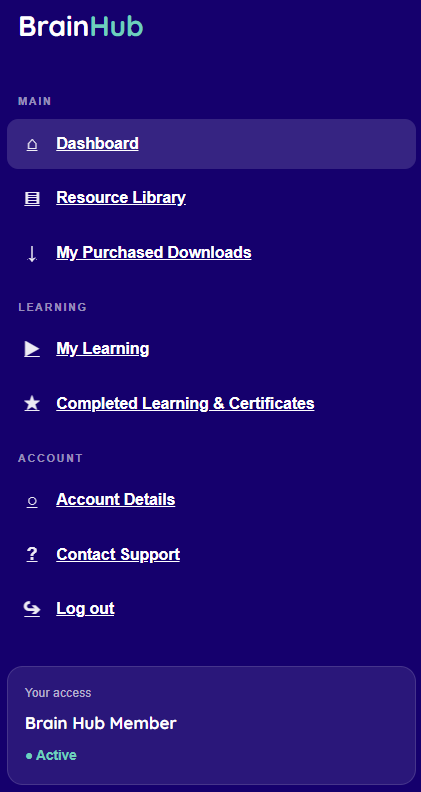
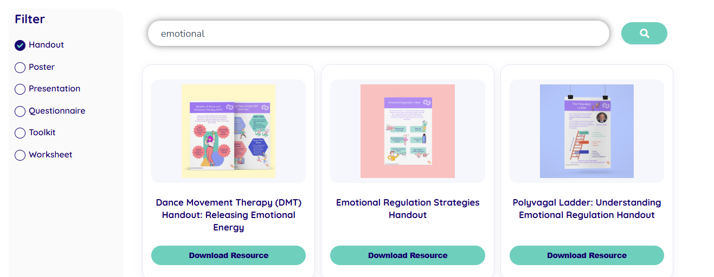
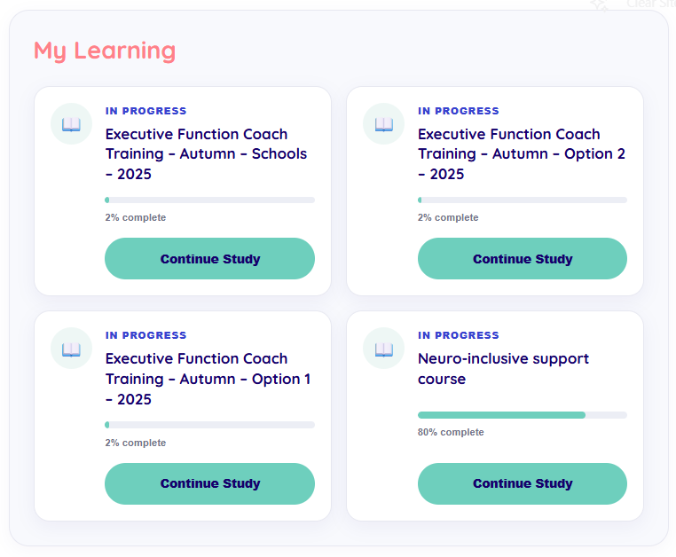
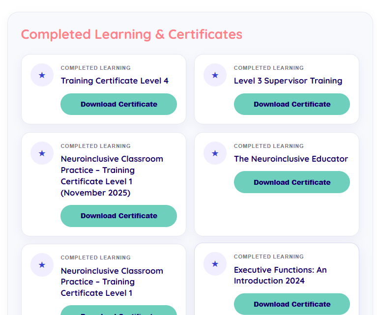

Public visitor
Discovering resources before signing in.
Public users needed a clear way to browse available content, understand what was open to them and identify where membership or purchase was required.
Search / Content discovery / Public access
Connections in Mind / Professional project
A WordPress-based resource and member experience designed to help people find relevant content more easily, while supporting different journeys for public users, members and customers.
01 / Context
The BrainHub includes a mix of public resources, member content, courses and paid products. As the platform grew, it became more important to make it easier for people to understand what they could access and where to go next.
The challenge was not only search. Different users needed different journeys depending on whether they were browsing publicly, signed in as a member, accessing learning content or moving through a purchase journey.
My work included improving how resources were displayed and discovered, supporting access and membership logic, troubleshooting user journeys, and customising WordPress behaviour using HTML, CSS, JavaScript and PHP.
02 / User journeys
BrainHub supports public visitors, members and customers, so the experience needed to make it clear what people could access and what their next step should be.
Public visitor
Public users needed a clear way to browse available content, understand what was open to them and identify where membership or purchase was required.
Search / Content discovery / Public access
Member
Signed-in members needed a more direct experience, with access to the resources and learning content included in their membership without repeatedly moving through purchase journeys.
MemberPress / Access logic / User experience
Customer
For paid content, the journey needed to connect resource discovery with WooCommerce purchasing and the access required afterwards.
WooCommerce / Purchase journey / Access
03 / WordPress development & access logic
I worked within WordPress using PHP, JavaScript and front-end code to customise how resources were displayed, searched and accessed by different users.
Search & discovery
I worked on the way resources could be searched and surfaced so users had a clearer route to relevant content rather than relying on long lists or manually browsing through the platform.
JavaScript / Search logic / WordPress
Membership access
MemberPress was used as part of the access model, with the user journey changing depending on whether someone was signed in and already had access to the content.
MemberPress / PHP / Access logic
E-commerce
Where content required payment, the experience needed to connect naturally with WooCommerce while still making the difference between member access and paid access clear.
WooCommerce / WordPress / Customer journey
Learning experience
BrainHub also includes LearnDash learning content, so part of my work involved troubleshooting and improving what happened after users had purchased, enrolled or received access.
LearnDash / User access / Troubleshooting

04 / Search experience
The resource experience needed to work for both people browsing publicly and members who were already signed in, so the search journey could not be treated as one identical experience.
Logged out
Public users could search and explore available resources, while the interface made it clearer when content required membership or purchase before access was available.
Public search / Discovery / Access messaging
Logged in
Signed-in users were given a different journey so they could move more directly to resources already included in their access, without being sent back through unnecessary purchase steps.
Member access / Conditional experience / UX

05 / Learning journey
The member experience also needed to make it easy to continue learning, understand progress and access completed certificates without searching across different parts of the platform.


06 / Problem solving & iteration
A large part of the work involved testing, troubleshooting and adjusting the experience as people used the platform in different ways.
Search behaviour
When search results were unclear or resources were difficult to find, I reviewed the underlying terms, categories and search behaviour to identify where the issue was coming from and adjust the experience.
Membership access
Access problems could involve membership rules, course enrolment, account state or the way content was connected within WordPress, so I worked through the user journey to isolate the cause rather than treating every access issue as the same problem.
Learning journeys
I worked on how learning progress, completed training and certificates were surfaced so users had a clearer understanding of where they were and what they could do next.
Continuous improvement
User questions and support requests often highlighted places where the interface, access journey or platform behaviour could be clearer. I used those patterns to guide further fixes and improvements.
07 / Outcome & what I learned
Over time, BrainHub became easier to navigate across resource discovery, member access, learning and completed content.
It also gave me a much deeper understanding of how WordPress, WooCommerce, LearnDash and MemberPress interact, and how changes in one part of the system can affect the experience somewhere else.
One of the biggest things I learned from the project was that fixing a user problem often means looking beyond the page where the problem appears. Search, access, purchases, learning and account state can all be connected, so I became much more systematic about tracing the full journey before making changes.